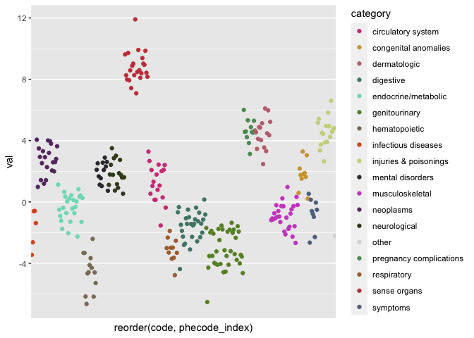
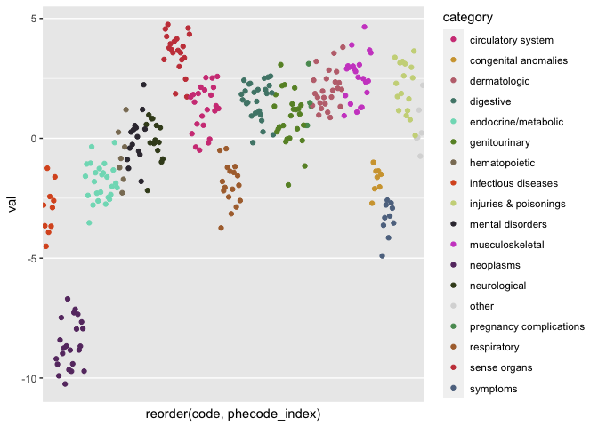
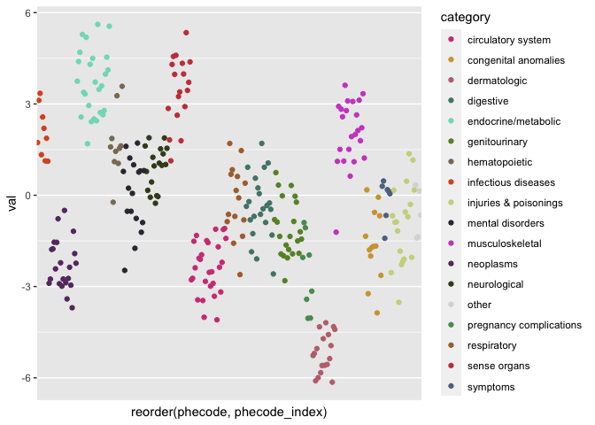

The goal of phewasHelper is to provide a set of simple lightweight helper functions for working with Phecode and Phewas data.
Installation
And the development version from GitHub with:
# install.packages("devtools")
devtools::install_github("nstrayer/phewas_helper")Usage
We will use a sample set of simulated PheWas data with phecodes to demonstrate the functions.
library(phewasHelper)
head(phewas_data)
#> # A tibble: 6 x 2
#> code val
#> <dbl> <dbl>
#> 1 420. 0.136
#> 2 401 1.04
#> 3 741. -2.26
#> 4 580. -6.53
#> 5 204. 2.59
#> 6 394. 2.67Normalizing phecodes
Phecodes show up in about a million different formats. In our demo data the phecodes have been converted to a numeric value. This would be an issue if we tried to harmonize with data that stored the phecodes in a string. The function normalize_phecodes is designed to fix this problem. It takes any phecode array and coerces it to a standard zero-padded string.
phewas_data %>%
mutate(fixed_code = normalize_phecodes(code)) %>%
head()
#> # A tibble: 6 x 3
#> code val fixed_code
#> <dbl> <dbl> <chr>
#> 1 420. 0.136 420.20
#> 2 401 1.04 401.00
#> 3 741. -2.26 741.20
#> 4 580. -6.53 580.12
#> 5 204. 2.59 204.10
#> 6 394. 2.67 394.20
# Update our original data with normalized phecodes
phewas_data <- phewas_data %>%
mutate(code = normalize_phecodes(code))Getting phecode information
Another issue that is commonly encountered in PheWas results is wanting to know what exactly a code is. The functions get_phecode_info() and join_phecode_info() help with that.
get_phecode_info() is the simpler of the two. It takes as input an array of phecodes and returns an array of the desired information, either description or category. This is useful for adding individual columns to a dataframe.
phewas_data %>%
mutate(descript = get_phecode_info(code, 'description'),
category = get_phecode_info(code, 'category')) %>%
head()
#> # A tibble: 6 x 4
#> code val descript category
#> <chr> <dbl> <chr> <chr>
#> 1 420.20 0.136 Pericarditis circulatory system
#> 2 401.00 1.04 Hypertension circulatory system
#> 3 741.20 -2.26 Stiffness of joint musculoskeletal
#> 4 580.12 -6.53 Non-proliferative glomerulonephritis genitourinary
#> 5 204.10 2.59 Lymphoid leukemia neoplasms
#> 6 394.20 2.67 Mitral valve disease circulatory systemFor more a more complete labeling of phecode information the function join_phecode_info() modifies a passsed dataframe by appending a desired subset of description, category, category number, and phecode index columns.
# We can append all info available
phewas_data %>%
join_phecode_info(phecode_column = code) %>%
head()
#> # A tibble: 6 x 6
#> code val description category category_number phecode_index
#> <chr> <dbl> <chr> <chr> <int> <int>
#> 1 420.20 0.136 Pericarditis circulatory… 8 771
#> 2 401.00 1.04 Hypertension circulatory… 8 744
#> 3 741.20 -2.26 Stiffness of joint musculoskel… 14 1594
#> 4 580.12 -6.53 Non-proliferative gl… genitourina… 11 1157
#> 5 204.10 2.59 Lymphoid leukemia neoplasms 2 167
#> 6 394.20 2.67 Mitral valve disease circulatory… 8 733
# Or we can just extract what we need
phewas_data <- phewas_data %>%
join_phecode_info(phecode_column = code,
cols_to_join = c("description", "category", "phecode_index"))
head(phewas_data)
#> # A tibble: 6 x 5
#> code val description category phecode_index
#> <chr> <dbl> <chr> <chr> <int>
#> 1 420.20 0.136 Pericarditis circulatory sys… 771
#> 2 401.00 1.04 Hypertension circulatory sys… 744
#> 3 741.20 -2.26 Stiffness of joint musculoskeletal 1594
#> 4 580.12 -6.53 Non-proliferative glomerulonephr… genitourinary 1157
#> 5 204.10 2.59 Lymphoid leukemia neoplasms 167
#> 6 394.20 2.67 Mitral valve disease circulatory sys… 733Coloring PheWas plots
Manhattan plots are commonly made of phewas results. Frequently the colors of the plots points are encoded by the categories. The default color palletes in ggplot2 and base-plot are not great and custom palletes like R color-brewer don’t give you enough colors to work with all the categories. To deal with this category_colors() returns a mapping of phecode category to colors that can be used easily in your plots.
library(ggplot2)
phewas_data %>%
ggplot(aes(x = reorder(code, phecode_index), y = val, color = category)) +
geom_point() +
scale_color_manual(values = category_colors()) +
theme(axis.ticks.x = element_blank(),
axis.text.x = element_blank(),
panel.grid.major.x = element_blank(),
panel.grid.minor.x = element_blank())
If just the color pallete is needed for ggplot then the function scale_color_phecode() makes this even easier.
phewas_data %>%
ggplot(aes(x = reorder(code, phecode_index), y = val, color = category)) +
geom_point() +
scale_color_phecode() +
theme(axis.ticks.x = element_blank(),
axis.text.x = element_blank(),
panel.grid.major.x = element_blank(),
panel.grid.minor.x = element_blank())
ggplot theme
One last helper is a theme object that lets you get rid of the tick marks for each phecode without the laboreous typing of theme(axis.ticks.x = ...) repeatedly.
phewas_data %>%
ggplot(aes(x = reorder(code, phecode_index), y = val, color = category)) +
geom_point() +
scale_color_manual(values = category_colors()) +
theme_phewas()
It can also be used on phecode-on-y-axis plots.
phewas_data %>%
ggplot(aes(y = reorder(code, phecode_index), x = val, color = category)) +
geom_point() +
scale_color_manual(values = category_colors()) +
theme_phewas(phecode_on_x_axis = FALSE)
Rolling up phecodes
Sometimes phecodes are reported with only the leaf values filled in. These data can be converted to a full - or “rolled up” - format with the functions rollup_phecode_counts() and rollup_phecode_pairs. First let’s look at the counts version.
# Patient data with non-rolled up codes
patient_data <- dplyr::tribble(
~patient, ~code, ~counts,
1, "250.23", 7,
1, "250.25", 4,
1, "696.40", 1,
1, "555.21", 4,
2, "401.22", 6,
2, "204.00", 5,
2, "751.11", 2,
2, "008.00", 1,
2, "008.50", 2,
2, "008.51", 3,
)
# Rollup the leaf codes to their parents
patient_data %>%
rollup_phecode_counts(phecode_col = code) %>%
head() %>%
knitr::kable()| code | patient | counts |
|---|---|---|
| 250.00 | 1 | 11 |
| 250.20 | 1 | 11 |
| 250.23 | 1 | 7 |
| 250.25 | 1 | 4 |
| 555.00 | 1 | 4 |
| 555.20 | 1 | 4 |
We can also do the same with data that just represents binary yes or no for phecode occurances with rollup_phecode_pairs().
# Patient data with non-rolled up codes
patient_data <- dplyr::tribble(
~patient, ~code,
1, "250.23",
1, "250.25",
1, "696.40",
1, "555.21",
2, "401.22",
2, "204.00",
2, "751.11",
2, "008.00",
2, "008.50",
2, "008.51",
)
# Rollup the leaf codes to their parents
patient_data %>%
rollup_phecode_pairs(phecode_col = code) %>%
arrange(code) %>%
head() %>%
knitr::kable()| patient | code |
|---|---|
| 2 | 008.00 |
| 2 | 008.50 |
| 2 | 008.51 |
| 2 | 204.00 |
| 1 | 250.00 |
| 1 | 250.20 |